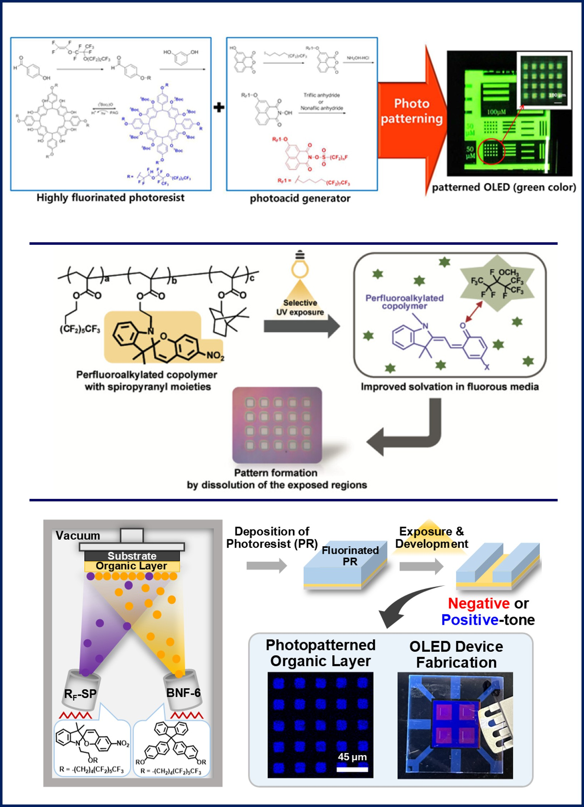

To develop novel imaging protocols based on radical and fluorine chemistry. Our research aims to enable the fabrication of high-resolution OLED pixel banks without damaging sensitive organic active layers.
- Synthesis of fluorinated resist materials and optimisation of the photolithography processes using fluorous solvents.
- This orthogonal processing ensures the integrity of organic semiconductors during device production.